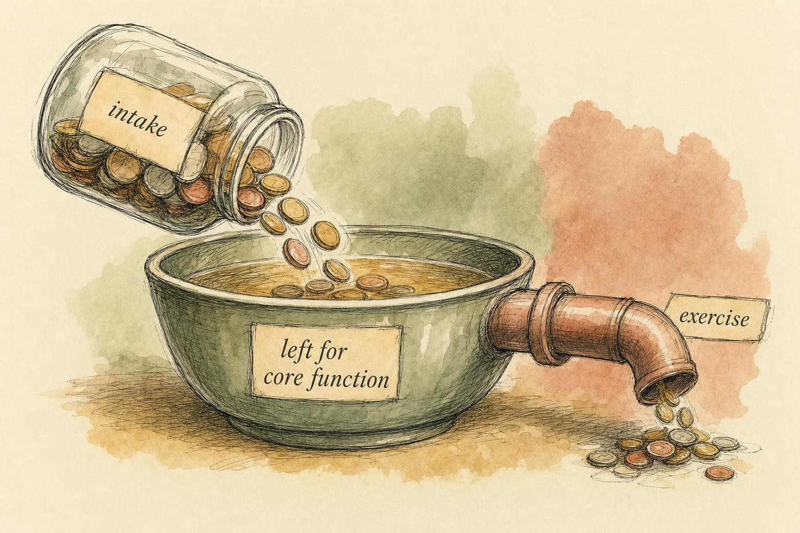
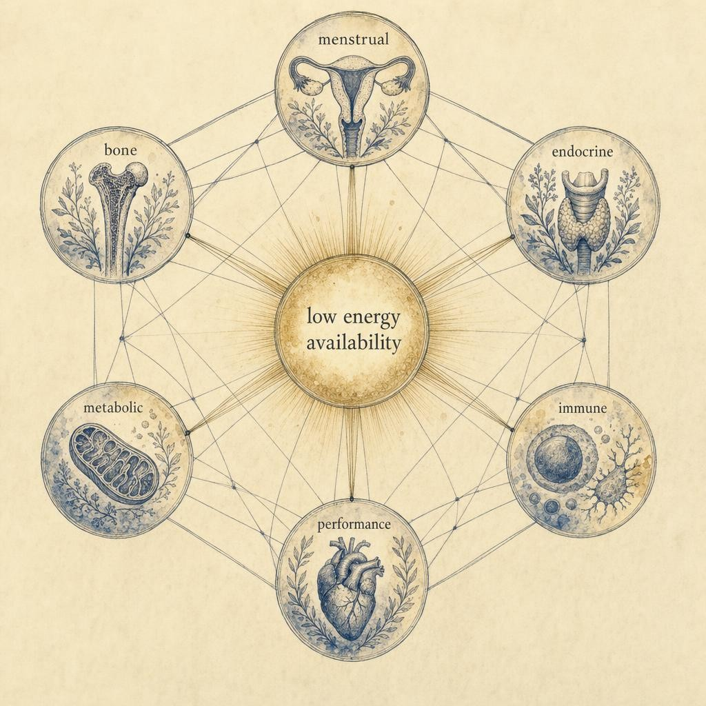

The Cost of Running on Empty
When the fuel left over for the body's own work runs short, physiology starts making hard choices.
Priya is 27, and she is five months into training for her second marathon. She eats three meals a day, logs every mile in an app, and by any outward measure is doing exactly what a committed runner is supposed to do. And yet her long-run pace has been stuck for six weeks. She has caught two colds this season already, more than in the previous two years combined. A dull ache in her second metatarsal, the bone behind her middle toe, turned out, on an evaluation she finally sought when it would not resolve, to be a stress reaction. And her period, which used to arrive like clockwork, has not shown up in four months. Priya has not skipped a meal on purpose. She has not weighed herself in months and insists she has not thought about her weight at all. And yet her body is behaving exactly as it would if a famine had arrived at her door.
Priya is not a patient in this course, and nothing here is written to diagnose her or anyone whose story resembles hers. She is a thread we will return to a few times in this chapter, a way of keeping the physiology anchored to a recognizable shape rather than an abstraction. What happened to her body is not a rare edge case. It is one of the most common and most under-recognized problems in sport, and it may be the single most consequential health topic in this course. It is also widely misread, as vanity, as a personal failure of willpower, as simple overtraining, or as an eating disorder. Sometimes it overlaps with disordered eating. Often it does not. To understand what is actually happening, we have to stop looking at the plate and the training log and ask a different question: what is left over after the day's training bill has already been paid.
This chapter is built around one governing idea. The body does not run its systems off what a person eats. It runs them off what remains after exercise has taken its share. When that remainder falls too low for too long, the body does not fail in one place. It downshifts a whole portfolio of systems at once, in a coordinated retreat that biology has been rehearsing for far longer than organized sport has existed. Understanding that retreat, its name, its triggers, its full reach, and the firm boundary around what an educated observer may and may not do about it, is the work of the pages ahead.
Two features of this topic make it worth the length of this chapter. The first is that it is common, common enough that most people who spend serious time around endurance sport, weight-class sport, or aesthetic sport will eventually recognize a piece of it in someone they know, possibly in themselves. The second is that it is quiet. Unlike an acute injury, there is rarely a single dramatic moment that announces it. It accumulates in the space between a slightly-too-light plate and a slightly-too-heavy training week, over months, until the accumulated signals finally cannot be ignored. Learning to see the pattern before it reaches that point, without ever pretending to be qualified to manage it, is the entire purpose of what follows.
What energy availability actually means
In the previous chapter we traced how the menstrual cycle behaves as a functional signal, quiet or loud depending on what the body is coping with from day to day. Here we follow that signal to its single most powerful upstream cause: energy availability, abbreviated EA.
Energy availability is not the same thing as how much a person eats, and it is not the same thing as energy balance. It is calculated as dietary energy intake minus the energy expended in exercise, and that result is then divided by fat-free mass, abbreviated FFM, the body's mass with stored fat excluded. The unit researchers use is kilocalories per kilogram of fat-free mass per day (Areta et al., 2020). Written as a simple relationship, energy availability equals energy in, minus exercise energy out, divided by fat-free mass in kilograms.
Put in plain language, energy availability is what is left over for everything the body does that is not exercise itself. That includes the obvious things, keeping the heart beating and the brain thinking, but it also includes an enormous, mostly invisible workload: repairing microscopic damage in tendon and bone, mounting an immune response, synthesizing new protein, regulating body temperature, and running the hormonal machinery that governs reproduction, growth, and thyroid function. All of that work draws on the same leftover pool of energy.
The mental model that matters here is a household budget. Income is what a person eats. One large, non-negotiable expense is the training already committed to that day. Energy availability is what remains in the account after that expense clears, and it is that remainder, not the gross income, that has to cover rent, utilities, and groceries for the rest of the body. A person can eat what looks like plenty and still leave the core functions underfunded, simply because exercise took the larger share first.
It is worth being clear about who this framework applies to. The research base is built mostly on competitive and highly trained athletes, but the underlying arithmetic does not care about a finish-line time or a competition schedule. A recreational exerciser who ramps up training volume, a person recovering from illness who resumes activity before intake catches up, or anyone whose life circumstances quietly reduce how much they eat while activity stays constant can run the same leftover shortfall an elite athlete can. The label RED-S is used mainly in sport-science and sport-medicine settings, but the physiology it describes is not exclusive to elite competition. It belongs to anyone whose exercise energy expenditure outruns their intake for long enough.
Consider Priya's arithmetic, not to diagnose her, since that is never the point of an illustration like this, but to make the numbers concrete. A runner logging serious marathon mileage can expend 700 to 900 kilocalories or more in a single long session. If intake does not rise to match that output, in absolute terms and relative to body size, the energy left over for hormonal and skeletal maintenance can fall well below what those systems need, even while the plate looks completely reasonable and the scale has not moved. This is exactly the trap: intake can look adequate, and weight can hold steady, while the leftover fraction, the part that actually funds the body's internal economy, quietly runs a deficit.
This distinction is the whole game. A person can be in apparent energy balance, weight stable on the scale, and still be running core systems on a deficit, because the body has quietly downshifted those systems to make the math work (Areta et al., 2020). Weight stability reassures people that everything is fine. It is not a reliable reassurance, and it is precisely the reassurance that kept Priya training through a stalled pace, a stress reaction, and a missed cycle before she sought any evaluation at all.
It also matters that low energy availability is a question of duration, not a single bad day. A hard training block followed by a light day, or a single missed meal before a long run, is not what this chapter is describing. The body tolerates ordinary daily fluctuation without issue. What matters is a sustained pattern, weeks and months of the leftover fraction running short, because it is sustained shortfall, not an occasional dip, that eventually forces the systems described later in this chapter to downshift. This is one more reason a single measurement or a single day of tracking tells an observer very little on its own.

Energy availability is the remainder, not the intake." data-image-idx="0" style="display:block;max-width:100%;max-height:75vh;height:auto;width:auto;margin:0 auto;cursor:pointer;">Low, intentional, and unintentional
Low energy availability, abbreviated LEA, is what happens when that remainder falls too far, for too long. It arrives by several different roads, and the road matters for how we think about a situation, though not for how firmly assessment belongs to professionals.
Sometimes low energy availability is intentional: deliberate weight cutting for a weight-class sport, a physique-sport push toward extreme leanness, or restrictive eating tied to a psychological condition. Sometimes it is entirely unintentional: a dedicated person increases training volume across a season and simply never scales intake to match, or has an appetite that does not keep pace with output, or follows well-meant advice to stay lean without understanding the cost (Nattiv et al., 2007). The unintentional path matters precisely because it can happen to a thoughtful, disciplined person who believes she is doing everything right, which is a fair description of Priya.
There is also a middle category worth naming: a person whose intake was once well matched to her output, but whose training load rose gradually across a season, a few extra miles here, a hillier route there, an added strength session, without a corresponding rise in intake. No single week looks alarming. The drift only becomes visible in hindsight, once the cumulative shortfall has been running long enough to produce the downstream signs this chapter describes. Growing adolescent athletes and postpartum athletes returning to training face a related version of this problem, where energy needs are shifting for reasons that have nothing to do with sport at all, and an intake that once matched output can quietly stop matching it without anyone deciding to change anything.
The landmark position stand from the American College of Sports Medicine, abbreviated ACSM, made this point explicitly: low energy availability can be inadvertent, intentional, or driven by disordered eating, and it is the low energy availability itself, with or without an eating disorder, that drives the downstream harm (Nattiv et al., 2007). This is why it is a mistake to collapse this whole topic into disordered eating. The two can overlap, and often do, but they are not the same thing, and treating them as identical causes us to miss the person who is undereating for her output without any eating pathology at all.
The weight-class and physique-sport context
Some sporting contexts make intentional low energy availability far more common, and it is worth naming them plainly. Weight-class sports, including wrestling, rowing's lightweight categories, boxing, and other combat sports, often involve acute weight cutting in the days before competition. This typically layers severe short-term fluid and food restriction, sometimes combined with heat exposure or other methods intended to shed water weight quickly, on top of a training season that may already be running a chronic energy shortfall. The acute cut and the chronic shortfall are two different exposures with two different time courses, but athletes in these sports frequently carry both at once, and each can amplify the other's downstream effects.
Acute weight cutting is worth describing on its own terms, not to instruct anyone in how to do it, but because its risks are distinct from the slower physiology this chapter otherwise focuses on. Rapid dehydration places real strain on cardiovascular and kidney function, can impair the cognitive sharpness and reaction time an athlete needs on competition day, and, when repeated across many competitions in a career, contributes to a pattern researchers call weight cycling, repeatedly losing and regaining weight, which carries its own independent health signal separate from any single cut. None of that description is a warning to be issued to an athlete by a coach. It is background for understanding why weight-class sports show up so consistently in the research on low energy availability and disordered eating risk.
Physique and aesthetic sports, including bodybuilding, figure and bikini competition, gymnastics, diving, and figure skating, carry a different but related pressure: a sustained push toward visible leanness that is judged, scored, or simply expected, independent of whether it serves performance. Here the exposure tends to be chronic rather than acute, a training season or an entire career spent hovering near or below what the body would choose on its own, punctuated by a further push toward an even leaner "peak week" or competition body ahead of specific events. The 2023 IOC consensus update devotes specific guidance to body composition assessment in sport precisely because an overfocus on being lighter or leaner is a recognized pathway into problematic low energy availability and disordered eating, and because no single body composition number has been shown to reliably predict a performance advantage across athletes (Mountjoy et al., 2023).
None of this means every wrestler or every gymnast is experiencing low energy availability, and none of it licenses anyone outside a clinical relationship to look at an athlete in one of these sports and assume a problem exists. What it means is that these contexts raise the population-level odds, which is exactly why recognizing the broader pattern, rather than staring at any single number, matters so much for anyone who works around these sports.
Where the threshold sits, and how sure we are
The most-cited number in this field comes from a controlled experiment by Loucks and Thuma (2003), who studied 29 regularly menstruating women and found that luteinizing hormone, abbreviated LH, pulsatility, the pulsing hormonal signal from the brain that drives the ovarian cycle, was disrupted when energy availability dropped below roughly 30 kilocalories per kilogram of fat-free mass per day. Above that threshold, the pulses held steady; below it, pulse frequency fell while pulse amplitude rose. This experiment is the mechanistic backbone of the whole framework, tracing a direct line from the energy budget to the brain's control of reproduction.
The pulse in question is generated by a small population of hypothalamic neurons that release gonadotropin-releasing hormone, abbreviated GnRH, in rhythmic bursts. Each burst tells the pituitary gland to release a pulse of luteinizing hormone, which in turn drives the ovary through its monthly work. This pulse generator, part of what is called the hypothalamic-pituitary-gonadal axis, abbreviated HPG axis, does not measure calories directly. It appears to read a constellation of metabolic signals, including circulating glucose, insulin, and other hormones that rise and fall with energy status, as a rough proxy for whether the surrounding environment can currently support the enormous biological investment of reproduction (Areta et al., 2020). When those signals say the cupboard is bare, the pulse generator slows down, regardless of whether the person intended to restrict anything at all.
Among those metabolic signals, leptin has drawn particular attention. Leptin is a hormone secreted by fat tissue in rough proportion to how much energy is stored, and it falls quickly when energy availability drops, well before fat mass itself changes very much. Because leptin is one of the signals the hypothalamus reads when deciding whether reproduction can be supported, a fast-falling leptin level is thought to be part of how the brain senses scarcity so quickly, often before any visible change in body composition (Areta et al., 2020). This is one reason a suppressed cycle can appear in an athlete whose physique looks, to any outside observer, entirely unremarkable.
Here honesty is required. That 30 kilocalorie threshold is a useful landmark, but it is not a bright line that applies identically to every person. It emerged from a short-term laboratory manipulation in a specific group, and individual variation is large. The most current IOC consensus deliberately moved away from a single magic number, distinguishing instead between adaptable low energy availability, which the body can tolerate for a while without lasting harm, and problematic low energy availability, which produces measurable harm, noting that where that line falls depends heavily on the individual (Mountjoy et al., 2023). The 2023 update also introduced a refined physiological model and a second version of a clinical assessment tool meant to help trained professionals grade severity and risk, tools built for practitioner use, not for self-assessment (Mountjoy et al., 2023). Much of the evidence beyond short-term studies is associative rather than causal (Areta et al., 2020). Use the threshold as a concept to understand, not as a diagnostic cutoff to apply to yourself or anyone else.
From a quiet cycle to a whole-body triage
When the leftover falls too low, the body does not fail everywhere at once. It triages. It protects the functions needed for immediate survival and dials down the ones it can defer. Reproduction is metabolically expensive and, from a strict survival standpoint, deferrable, so the HPG axis is often first to be sacrificed (Nattiv et al., 2007; Ihalainen et al., 2024). This is exactly why the menstrual cycle is such an honest early signal: it is the canary, going quiet before louder alarms sound.
But framing this purely as a menstrual issue badly understates its reach. That was the central insight behind the shift from the older female athlete triad to a broader framework. The triad, formalized by the ACSM in 2007, described three interrelated points on a spectrum: energy availability, menstrual function, and bone mineral density, abbreviated BMD (Nattiv et al., 2007). It was a major advance, but it left out much of what low energy availability actually touches, and it was framed around female athletes only.
In 2014 the IOC introduced Relative Energy Deficiency in Sport, abbreviated RED-S, to capture the fuller picture: not just menstrual and bone effects but impaired metabolic rate, immunity, protein synthesis, cardiovascular health, and more, in both female and male athletes (Mountjoy et al., 2014). An interim 2018 update refined the clinical models further, and the 2023 update integrated more than 170 additional studies published since then, sharpening the distinction between adaptable and problematic exposure and adding new attention to the interplay between mental health and this whole picture (Mountjoy et al., 2023). Across every revision, the core idea has held: one upstream cause, many downstream systems, all connected.
The syndrome of Relative Energy Deficiency in Sport refers to impaired physiological function including, but not limited to, metabolic rate, menstrual function, bone health, immunity, protein synthesis, and cardiovascular health, caused by relative energy deficiency. Male athletes are also affected.
Mountjoy et al., 2014, IOC consensus statement
The systems, one by one
It helps to name what gets affected, because the whole point of the framework is that these are not separate, coincidental problems.
Menstrual and reproductive. The disruption of luteinizing hormone pulsatility described by Loucks and Thuma (2003) suppresses the downstream cycle through the HPG axis. This can range from subtle shortening of the luteal phase, to skipped ovulation, to full amenorrhea, the absence of menstrual periods, the topic of the previous chapter. A promising line of thinking suggests that subtle markers, such as a missing luteinizing hormone surge or low luteal-phase progesterone, may reveal dysfunction before periods stop entirely (Ihalainen et al., 2024). This is a topic for qualified evaluation, not self-tracking to a conclusion.
Bone. This is the thread we carry directly into the next chapter. Estrogen, suppressed along with the rest of the reproductive axis, is protective of bone. When low energy availability suppresses that hormone and simultaneously deprives bone of the raw energy and nutrients it needs to remodel, the balance between the cells that build bone and the cells that break it down tips unfavorably, bone mineral density can fall, and the risk of bone stress injuries, such as the stress reaction Priya experienced, rises (Nattiv et al., 2007; Gallant et al., 2024). Because peak bone mass is largely built during adolescence and young adulthood, a period of suppressed estrogen during exactly those years can leave a skeletal deficit that outlasts the training season that caused it. A quiet cycle and weakening bone are not two coincidences. They share one cause, and the next chapter takes up exactly how.
Thyroid and endocrine. Beyond the reproductive axis, low energy availability lowers resting metabolic rate, abbreviated RMR, and disrupts thyroid signaling, part of the body's coordinated downshift. A pattern resembling low triiodothyronine, abbreviated T3, the active thyroid hormone, along with blunted growth hormone signaling, has been documented in athletes with chronic low energy availability, consistent with a body conserving fuel by slowing its own metabolic engine (Ihalainen et al., 2024; Areta et al., 2020). Appetite-regulating hormones and iron status can also shift, with knock-on effects on energy and performance.
Cardiovascular. This system is easy to overlook because its effects are quieter than a missed period or a stress fracture, but it is named explicitly in the IOC's own definition of RED-S. Chronic low energy availability has been linked to an unfavorable shift in cholesterol and lipid markers and to impaired function of the endothelium, the thin layer of cells lining blood vessels, changes plausibly tied to the loss of estrogen's normal cardioprotective effects and to the broader hypometabolic state (Mountjoy et al., 2014; Mountjoy et al., 2023). A slowed resting heart rate and lower blood pressure can accompany the same hypometabolic shift that lowers resting metabolic rate elsewhere in the body, changes that in another context might be read as a mark of excellent cardiovascular fitness rather than a sign of a system running on too little fuel. None of this produces a dramatic symptom an athlete would notice day to day, which is part of why it is so easy for the whole picture to go unrecognized.
Immune. The person who catches every cold, as Priya has this season, is not imagining it. Impaired immunity and higher illness burden are documented consequences, and the meta-analysis by Gallant et al. (2024) found increased illness-related absence from training among athletes with low energy availability. The mechanism is consistent with the rest of the triage story: immune surveillance and repair are energetically expensive, and when the leftover energy pool shrinks, the immune system is one more line item that gets a reduced budget.
Performance. This is the cruel irony at the center of the topic, which we take up next.
The psychological dimension
None of the systems above exist in isolation from mood and mind, and recent updates to the RED-S consensus have paid closer attention to that overlap. Low energy availability has been associated with mood changes, fatigue, and psychological conflict in its earlier stages, and with more pronounced anxiety and depressive symptoms as the shortfall becomes more severe (Mountjoy et al., 2023). The relationship also runs in the other direction: body dissatisfaction, perfectionism, and the psychological demands of a leanness-focused sport can be part of what drives an athlete toward restrictive eating in the first place. This is precisely why a multidisciplinary care team, discussed later in this chapter, so often includes a mental health professional alongside a physician and a registered dietitian. The psychological and the physiological are not two separate stories here. They are the same story, told from two directions at once.

One upstream cause, many connected systems." data-image-idx="1" style="display:block;max-width:100%;max-height:75vh;height:auto;width:auto;margin:0 auto;cursor:pointer;">The leanness trap: when less fuel dims performance
Perhaps the most damaging myth in leanness-focused sport is the belief that getting lighter or leaner always makes an athlete faster or better. Within a healthy range, favorable body composition can help. But past a point, low energy availability actively degrades the very performance it is supposed to serve, and the person experiencing it often cannot feel the trade happening. Priya's plateaued pace is consistent with exactly this pattern, though only a clinician evaluating her directly could ever confirm that link in her specific case.
The evidence here has grown sharper. The first systematic review and meta-analysis on the topic pooled 59 studies covering 6,118 athletes and found that 44.7 percent had low energy availability, roughly comparable in female athletes (44.2 percent) and male athletes (49.4 percent) (Gallant et al., 2024). Athletes with low energy availability showed decreased running performance, blunted training response, reduced endurance, and declines in coordination, concentration, judgment, explosive power, and agility, along with more time lost to illness (Gallant et al., 2024). An earlier narrative review documented prevalence in the range of 22 to 58 percent across sports and reached similar conclusions about the performance cost (Logue et al., 2020).
So the leanness push can produce an athlete who is lighter, who believes leanness is helping, and who is measurably slower, weaker, and more injury-prone than she would otherwise be. The body is not being stubborn. It is doing exactly what a household in a budget crisis does: it stops investing in the future to pay the bills today, and adaptation, the thing training is supposed to buy, is a future investment.
One more honest note about the evidence. That same review by Logue et al. (2020) found that knowledge of RED-S and its performance implications remains low among athletes and coaches. So the pattern is common, costly, and poorly understood by the very people surrounded by it. That combination is why normalization is such a danger, which is where we turn next.
Why the early signs get normalized
Sport cultures that prize leanness create the perfect conditions to miss this. A skipped period gets reframed as convenient. Constant hunger gets praised as discipline. Frequent minor illness gets shrugged off as bad luck, and a stalled pace gets read as a plateau to push through rather than a signal to slow down. Cold hands, low mood, poor sleep, and stalled progress each get an isolated, benign explanation. Because low energy availability so often arrives unintentionally and without any dramatic eating pathology, there is no obvious villain to point to, and the individual pieces look small. Priya's own coach, told separately about the stalled pace, the colds, the stress reaction, and the missed periods, might reasonably have treated each as its own minor issue rather than recognizing a single thread running through all four.
Media portrayals of elite performance do not help. A visibly lean physique is routinely presented as the image of peak fitness, and a lighter athlete is often assumed, without evidence, to be a faster or stronger one. Compliments about leanness can land as praise even when they describe the visible surface of a process that is quietly working against the athlete underneath. None of this is anyone's fault in a simple sense. It is what happens when a culture's aesthetic ideal and a body's actual physiology point in opposite directions, and nobody in the room has the framework to notice the gap.
The framework's gift is that it teaches an observer to see the pieces as a set. A quiet cycle plus a nagging bone injury plus frequent illness plus stalled performance is not four small stories. It may be one story with one cause. Screening tools exist, such as the Low Energy Availability in Females Questionnaire, but these are instruments for trained professionals, and even they have real limitations (Logue et al., 2020). Recognizing the constellation is within reach for an educated observer. Interpreting it, confirming it, and doing anything about it are not.
Where the coaching stops and care begins
This is the firmest line in the course, and it belongs especially around amenorrhea and RED-S. What this chapter equips you to do is recognize the pattern and understand its reach. What it does not do, and what you must not do, is diagnose, assess energy availability in a real person, prescribe intake or training changes, or manage the condition. The absence of periods in particular has many possible causes, some benign and some serious, and sorting them out is medical work, as the previous chapter emphasized.
The reasons for the boundary are not bureaucratic. Assessment requires clinical measurement and history that no amount of pattern recognition can substitute for. Care is genuinely multidisciplinary, often involving a physician, a registered dietitian, and a mental-health professional working together, sometimes alongside a certified athletic trainer or exercise physiologist (Nattiv et al., 2007; Mountjoy et al., 2023). And getting it wrong carries real harm, both from missing a serious underlying cause and from mishandling a fragile situation. Your role is to notice, to take what you notice seriously, and to understand that it may warrant professional evaluation. Then you hand it on.
The stakes of timely referral are not only about the current season. Bone built, or not built, during these years carries forward for decades, and the cardiovascular changes described earlier accumulate quietly across a career if the underlying shortfall is never corrected. A pattern caught and referred early is a far smaller problem than the same pattern discovered only after years of accumulated cost, which is exactly why noticing early, and referring early, matters as much as it does.
A note of humility fits here too. This course distills a research literature that is still evolving, that leans heavily on short-term studies, and that has genuine gaps, including how much of it generalizes across body types, sports, and populations that have historically been underrepresented in the research. Clinical expertise and lived experience carry knowledge the studies have not fully captured. Holding the pattern lightly, and the boundary firmly, is the mature response to both.
Key Takeaways
- Energy availability (EA) is the energy left for core body functions after exercise is paid for, normalized to fat-free mass (FFM). It is not intake and not energy balance, and weight can stay stable while it runs low.
- Low energy availability (LEA) can be intentional, from weight cutting or physique demands, or entirely unintentional in a committed person who simply underfuels her output. It is not the same thing as an eating disorder, though the two can overlap.
- The suppression of luteinizing hormone pulsatility, generated by the GnRH pulse generator of the HPG axis, below roughly 30 kilocalories per kilogram of fat-free mass per day is the mechanistic landmark, but it is a concept, not a personal cutoff, and individual variation is large.
- Relative Energy Deficiency in Sport (RED-S) ties menstrual, bone, thyroid and endocrine, cardiovascular, immune, and performance effects to one upstream cause, in both female and male athletes. A quiet cycle and weakening bone share that cause.
- Weight-class and physique-focused sports raise the population-level odds of intentional low energy availability, through acute weight cutting, chronic leanness pressure, or both, but the physiology, and the response to it, is the same regardless of the road that led there.
- Low energy availability is common, affecting roughly 45 percent of athletes in pooled data, and it degrades performance even as leanness feels like an advantage.
- Psychological signs, mood changes, anxiety, and disordered eating, and physiological signs, a quiet cycle, weakening bone, and frequent illness, are two views of the same underlying process, which is why care for this pattern is multidisciplinary by design.
- Your role is to recognize the pattern and its reach and to understand it may warrant professional evaluation. Assessment, diagnosis, and care belong to qualified professionals, never to you, especially with amenorrhea and RED-S.
We flagged bone as the thread running out of this chapter. Next we follow it directly: how estrogen protects the skeleton, why low energy availability and a suppressed cycle put bone at risk during the very years bone should be at its strongest, and what a lifetime of that trade-off can cost. The canary and the scaffolding, it turns out, answer to the same signal.
References
Areta, J. L., Taylor, H. L., & Koehler, K. (2020). Low energy availability: History, definition and evidence of its endocrine, metabolic and physiological effects in prospective studies in females and males. European Journal of Applied Physiology, 121(1), 1-21. https://doi.org/10.1007/s00421-020-04516-0
Gallant, T. L., Ong, L. F., Wong, L., Sparks, M., Wilson, E., Puglisi, J. L., & Gerriets, V. A. (2024). Low energy availability and relative energy deficiency in sport: A systematic review and meta-analysis. Sports Medicine, 55(2), 325-339. https://doi.org/10.1007/s40279-024-02130-0
Ihalainen, J. K., Mikkonen, R. S., Ackerman, K. E., Heikura, I. A., Mjøsund, K., Valtonen, M., & Hackney, A. C. (2024). Beyond menstrual dysfunction: Does altered endocrine function caused by problematic low energy availability impair health and sports performance in female athletes? Sports Medicine, 54(9), 2267-2289. https://doi.org/10.1007/s40279-024-02065-6
Logue, D. M., Madigan, S. M., Melin, A., Delahunt, E., Heinen, M., Donnell, S. M., & Corish, C. A. (2020). Low energy availability in athletes 2020: An updated narrative review of prevalence, risk, within-day energy balance, knowledge, and impact on sports performance. Nutrients, 12(3), 835. https://doi.org/10.3390/nu12030835
Loucks, A. B., & Thuma, J. R. (2003). Luteinizing hormone pulsatility is disrupted at a threshold of energy availability in regularly menstruating women. The Journal of Clinical Endocrinology & Metabolism, 88(1), 297-311. https://doi.org/10.1210/jc.2002-020369
Mountjoy, M., Sundgot-Borgen, J., Burke, L., Carter, S., Constantini, N., Lebrun, C., Meyer, N., Sherman, R., Steffen, K., Budgett, R., & Ljungqvist, A. (2014). The IOC consensus statement: Beyond the female athlete triad, Relative Energy Deficiency in Sport (RED-S). British Journal of Sports Medicine, 48(7), 491-497. https://doi.org/10.1136/bjsports-2014-093502
Mountjoy, M., Ackerman, K. E., Bailey, D. M., Burke, L. M., Constantini, N., Hackney, A. C., Heikura, I. A., Melin, A., Pensgaard, A. M., Stellingwerff, T., Sundgot-Borgen, J. K., Torstveit, M. K., Jacobsen, A. U., Verhagen, E., Budgett, R., Engebretsen, L., & Erdener, U. (2023). 2023 International Olympic Committee's (IOC) consensus statement on Relative Energy Deficiency in Sport (REDs). British Journal of Sports Medicine, 57(17), 1073-1097. https://doi.org/10.1136/bjsports-2023-106994
Nattiv, A., Loucks, A. B., Manore, M. M., Sanborn, C. F., Sundgot-Borgen, J., & Warren, M. P. (2007). American College of Sports Medicine position stand: The female athlete triad. Medicine & Science in Sports & Exercise, 39(10), 1867-1882. https://doi.org/10.1249/mss.0b013e318149f111